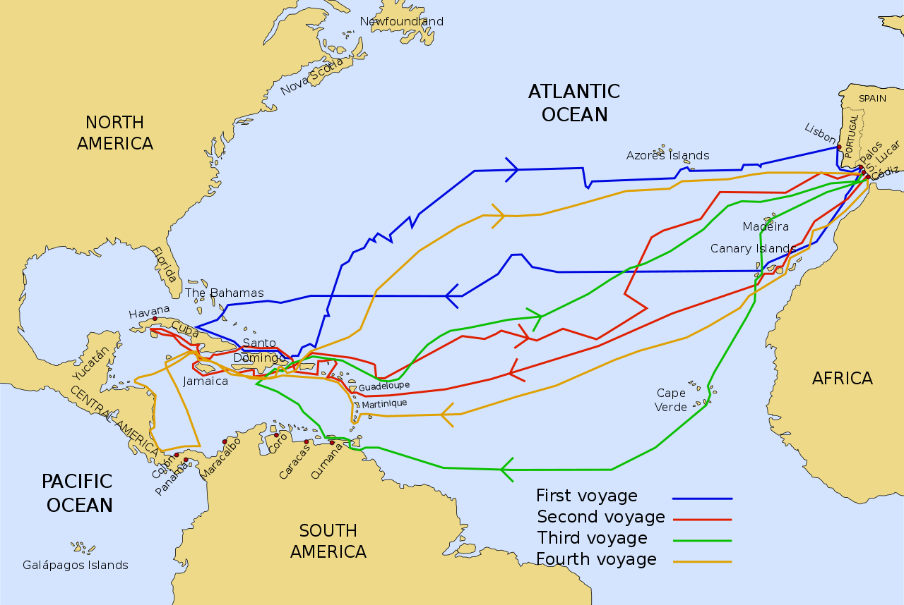
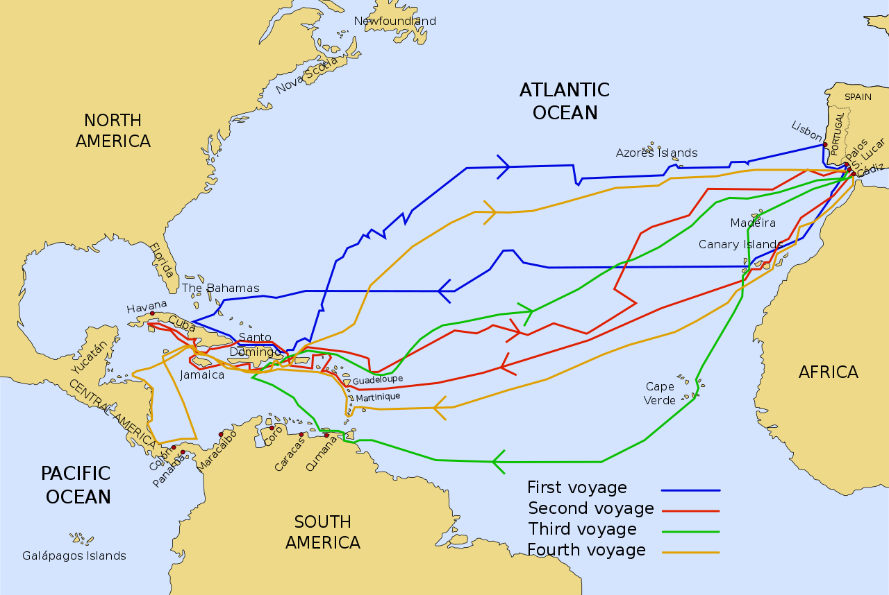

Cristopher Columbus
Cristopher Columbus was a self-educated Italian explorer who found a sponsor in Queen Isabella and King Ferdinand of Spain. With three ships, he traveled for several months across the Atlantic Ocean finally landing in the Bahamas. He returned to the Caribbean three times after his first expedition, but his strained relationship with the Spanish crown ultimately led to his arrest and removal from his position of power in the new Spanish colonies.
 

| Name | Christopher Columbus |
|---|---|
| Date of Birth | # |
| Date of Death | # |
| Country of Origin | Italy |
| Sponsor | Spain |
| Expedition(s) | Bahamas, Cuba, Hispaniola |